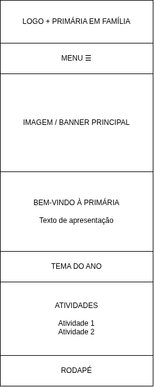
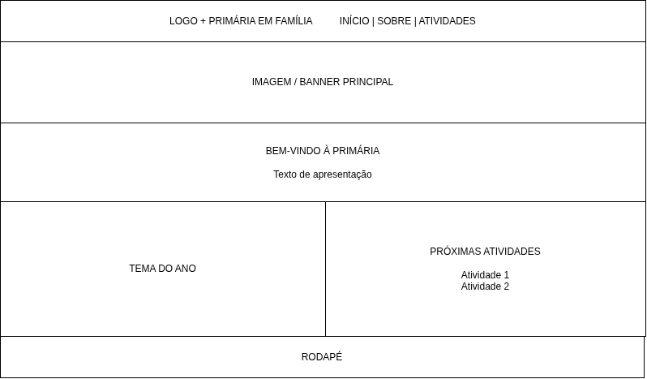

Nome do Site
Primária em Família
O nome foi escolhido porque representa a ideia de fortalecer o aprendizado do evangelho tanto na Primária quanto no lar. O site será voltado para pais, líderes e crianças.
Logotipo:
Finalidade do Site
O site fornecerá informações sobre a Primária da Igreja de Jesus Cristo dos Santos dos Últimos Dias. Seu objetivo é oferecer um espaço com conteúdos úteis para pais, líderes e crianças, incluindo o propósito da Primária, o tema anual, atividades, recursos para o aprendizado do evangelho e um calendário de eventos.
Cenários
- Como posso ajudar meu filho a participar mais da Primária e aprender o tema do ano?
- Onde posso encontrar informações sobre as atividades da Primária e os próximos eventos?
Esquema de Cores
O site utilizará uma paleta de cores acolhedora e agradável, escolhida para transmitir organização, alegria e tranquilidade.
- Azul (#2F5D8C): será utilizado nos títulos, no cabeçalho e nos elementos principais de navegação.
- Amarelo (#F2C94C): será utilizado em destaques e detalhes importantes.
- Branco (#FFFFFF): será utilizado principalmente como cor de fundo para manter o site limpo e facilitar a leitura.
- Cinza escuro (#333333): será utilizado nos textos para proporcionar boa legibilidade.
Tipografia
O site utilizará duas fontes para criar uma aparência organizada, agradável e fácil de ler.
- Poppins: será utilizada nos títulos e cabeçalhos do site, proporcionando destaque e uma aparência moderna.
- Open Sans: será utilizada nos textos e conteúdos gerais, facilitando a leitura e proporcionando uma aparência limpa.
Wireframe
Abaixo estão os wireframes da página inicial do site para a visualização em dispositivos móveis e para a visualização em telas maiores (desktop).
Visualização Mobile

Visualização Desktop
